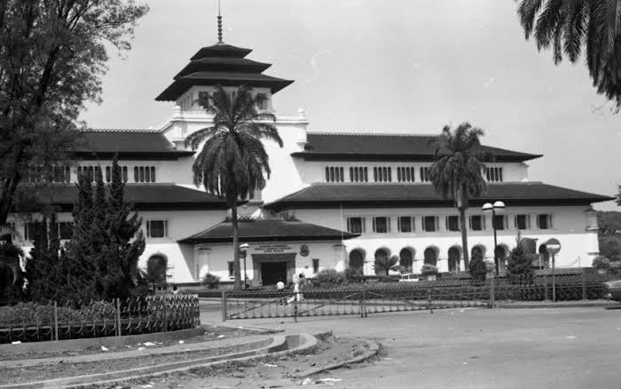
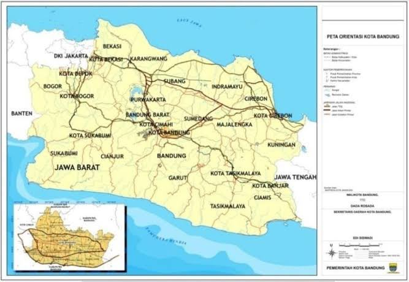
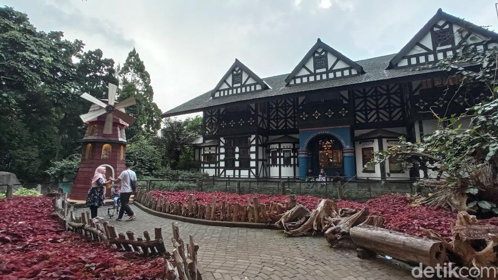
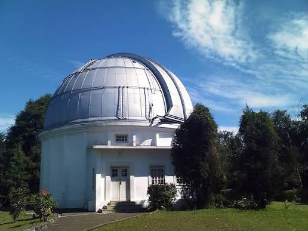

Sejarah

Kata Bandung berasal dari kata bendung atau bendungan karena
terbendungnya sungai Citarum oleh lava Gunung Tangkuban Parahu
yang lalu membentuk telaga.
Legenda yang diceritakan oleh orang-orang tua di Bandung
mengatakan bahwa nama Bandung diambil dari sebuah kendaraan
air yang terdiri dari dua perahu yang diikat berdampingan
yang disebut perahu bandung.
Berdasarkan filosofi Sunda, kata Bandung juga berasal dari
kalimat Nga-Bandung-an Banda Indung, yang merupakan kalimat
sakral dan luhur karena mengandung nilai ajaran Sunda.
Geografis

Kota Bandung dikelilingi oleh pegunungan, sehingga bentuk
morfologi wilayahnya bagaikan sebuah mangkok raksasa.
Secara geografis kota ini terletak di tengah-tengah
provinsi Jawa Barat.
Kota Bandung berada pada ketinggian sekitar 768 meter
di atas permukaan laut. Titik tertinggi berada di sebelah
utara dengan ketinggian 1.050 meter di atas permukaan laut.
Kota Bandung dialiri dua sungai utama, yaitu Sungai
Cikapundung dan Sungai Citarum beserta anak-anak sungainya.
Wisata
Sejak dibukanya Jalan Tol Cipularang, kota Bandung telah
menjadi tujuan utama dalam menikmati liburan akhir pekan,
terutama dari masyarakat yang berasal dari Jakarta
dan sekitarnya.
Farm House Lembang

Berada di jalur utama Bandung-Lembang, Farm House
menjadi objek wisata yang menghadirkan nuansa wisata
khas Eropa.
Observatorium Bosscha

Observatorium Bosscha memiliki beberapa teleskop,
antara lain Refraktor Ganda Zeiss, Schmidt Bimasakti,
Refraktor Bamberg, Cassegrain GOTO, dan Teleskop Surya.